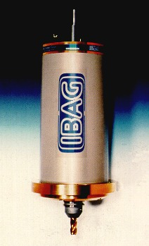
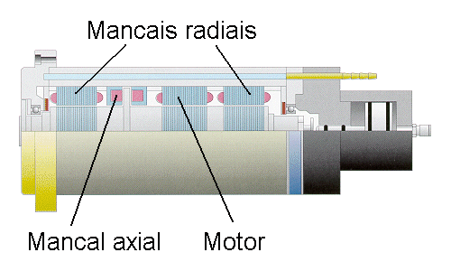

LMP>Linhas de Pesquisa>SISMEC>Usinagem com Cabeçote de Alta Freqüencia
OBJETIVOS Este trabalho tem como objetivo integrar um cabeçote de alta rotação
(até 40.000 rpm) com mancais magnéticos em um centro de usinagem
convencional. Posteriormente objetiva-se investigar os melhores parâmetros
(velocidade de corte, avanço, profundidade de corte, fluido de corte,
etc.) na usinagem (fresamento, retificação) de alumínio,
aço e madeira. Os resultados obtidos serão comparados com
os resultados da usinagem convencional.  PROCEDIMENTOSPrimeiramente o cabeçote foi instalado em um centro de usinagem
Thyssen Hüller-Hille n-bh 65. As aplicações do cabeçote de alta rotação serão voltadas principalmente para o fresamento de cavidades de forma livre, objetivando a fabricação de matrizes. Os estudos visam correlacionar os parâmetros de entrada (velocidade de corte, avanço, penetração passiva, entre outras), com as caraterísticas do processo (componentes da força de usinagem, desgaste de ferramenta, temperatura) e o resultado de trabalho (acabamento, produtividade, qualidade geométrica). Os melhores parâmetros de corte para as diferentes combinações
de material e ferramenta serão determinados. Para comparar os resultados
com os da usinagem convencional, ensaios com os mesmos materiais serão
realizados com baixas velocidades de corte. Através de uma interface entre o equipamento controlador do cabeçote e um computador, as correntes elétricas e outros parâmetros dos mancais magnéticos podem ser medidos, permitindo a determinação das forças de corte. Estas forças de corte podem ser comparadas às forças obtidas através da medição com uma plataforma piezelétrica.  |
| Contato: SISMEC Walter Lindolfo Weingaertner Prof. Dr.-Ing |
Última Atualização 21.06.2006 |